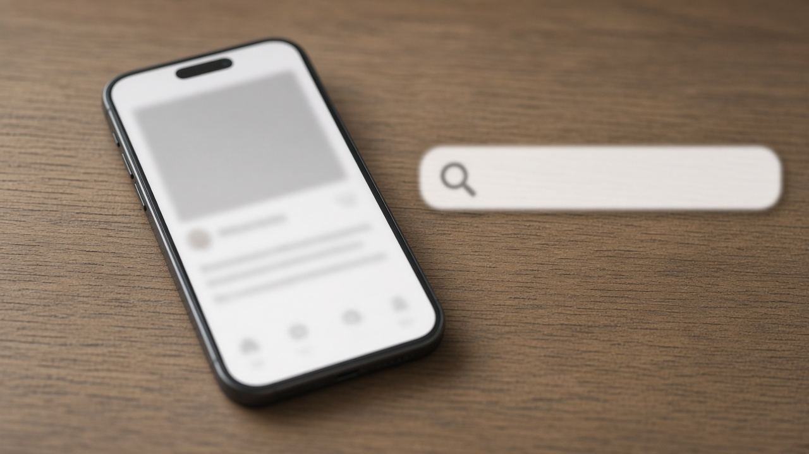

중학생 때 올린 글과 사진 지우고 싶다면, 30세 미만은 지우개 서비스로 삭제 요청할 수 있어요
예전에 쓰던 카페나 게시판에 중학생, 고등학생 때 올린 글이 아직 검색된다는 걸 알고 당황한 적 있으신가요.
계정 비밀번호는 잊어버렸고, 가입할 때 쓴 휴대폰 번호도 바뀌어서 직접 지울 방법이 없는 경우가 생각보다 많아요.
이럴 때 쓸 수 있는 공공 서비스가 개인정보보호위원회의 지우개 서비스예요.
마침 11월 13일에는 청소년들이 이 서비스를 더 쉽게, 더 넓게 쓸 수 있게 해 달라고 개인정보위에 직접 제안하면서 다시 관심을 받고 있어요.
누가 신청할 수 있는지, 어떤 글이 대상인지, 무엇을 준비하면 되는지 차례로 정리해 볼게요.
11월 13일에 무슨 이야기가 나왔는지
개인정보위는 11월 13일 정부서울청사에서 세이브더칠드런 아동·청소년자문단 온세이버 소속 학생 4명에게서 개인정보 보호 정책제안서를 전달받았어요.
학생들은 7월부터 10월까지 실제 서비스의 개인정보 처리방침과 동의 화면, 지우개 서비스를 직접 써 보며 불편한 점을 정리했다고 해요.
지우개 서비스에 대해서는 신청 절차를 간소화하고, 다른 사람이 올린 내 개인정보까지 지원 범위를 넓히고, 신청 뒤 진행 상황과 결과를 더 잘 알려 달라는 의견을 냈어요.
개인정보위는 지금 추진 중인 개선방안에 이 제안을 반영해 연내 입법을 추진하겠다고 밝혔고, 11월 17일에는 아동·청소년과 사망자 정보 처리에 관한 제도개선 토론회도 열 예정이에요.
다만 이건 앞으로 바뀔 방향이고, 지금 당장 신청할 수 있는 범위는 아래에 정리한 현재 기준을 따라야 해요.
누가 신청할 수 있고 어떤 글이 대상인지
11월 14일 기준으로 개인정보 포털 안내를 보면, 30세 미만이면 누구나 신청할 수 있어요.
예전에는 24세 이하만 가능했는데 2024년부터 30세 미만으로 넓어졌어요.
다만 아무 글이나 지워 주는 건 아니고, 19세 미만 미성년 시기에 본인이 직접 올린 글이나 사진, 영상 가운데 개인정보가 들어 있는 게시물만 지원 대상이에요.
여기서 개인정보는 이름, 생년월일, 전화번호, 주소, 얼굴 사진처럼 특정한 사람을 알아볼 수 있는 정보를 말해요.
개인정보가 없거나 성인이 된 뒤에 쓴 글이라면 삭제 대행 대신 스스로 지우는 방법을 안내받게 돼요.
삭제와 검색 차단은 어떻게 다른지
신청할 때는 원하는 도움을 고르게 되는데, 크게 게시물 삭제, 검색 차단, 상담 세 가지예요.
게시물 삭제를 고르면 담당자가 그 글이 있는 게시판 관리자에게 글을 지우거나 보이지 않게 가려 달라고 대신 요청해요.
검색 차단은 글을 가렸는데도 포털 검색 결과에 계속 뜨거나, 사이트가 문을 닫아 삭제가 어려울 때 검색에 나오지 않게 해 달라고 요청하는 방식이에요.
세 가지는 함께 고를 수도 있어요.
지금 기준으로 다른 사람이 올린 글에 내 개인정보가 들어 있는 경우는 삭제 대행이 아니라 어떻게 대처하면 좋을지 안내하는 상담으로 이어져요.
청소년들이 이번에 넓혀 달라고 요청한 부분이 바로 이 지점이에요.

신청 전에 준비할 것과 순서
신청은 개인정보 포털 누리집에서 본인 인증을 한 뒤 지우개 서비스 메뉴로 들어가서 하면 돼요.
순서는 본인 인증, 신청 유형 선택, 개인정보 처리 안내 확인, 신청 정보 입력, 권리 위임, 결과 확인으로 이어져요.
가장 중요한 건 입증자료예요.
게시물 주소가 보이도록 글 전체 화면을 갈무리해 두고, 그 사이트에서 쓰던 이름이나 아이디, 닉네임이 보이는 회원 정보 화면이나 같은 아이디로 올린 다른 글 화면도 함께 갈무리해 두세요.
14세 이상은 온라인으로 직접 신청하고 처리 상태를 조회할 수 있고, 14세 미만은 법정대리인 동의가 필요해요.
처리 결과는 문자와 이메일로 알려 주고, 자료가 부족하면 보완 요청이 올 수 있어요.
신청해도 안 되는 경우와 문의처
본인이 직접 지울 수 있는 글이거나, 작성자를 알아볼 개인정보가 없는 글은 지원이 제한될 수 있어요.
본인이 쓴 글이라는 걸 입증하기 어렵거나, 법에 따라 보존해야 하는 글, 공공의 이익과 관련된 글, 게시판 운영자와 연락이 닿지 않는 경우도 마찬가지예요.
특히 다른 사람이 쓴 글을 내가 쓴 것처럼 거짓으로 신청하면 민사나 형사 책임을 질 수 있으니 주의해야 해요.
헷갈리는 부분은 평일 오전 9시부터 오후 6시까지 지우개 서비스 전화 02 2135 8362로 물어볼 수 있어요.
제도가 바뀌는 내용은 연내 입법 추진 소식에 따라 달라질 수 있으니, 신청 직전에 개인정보 포털 안내를 한 번 더 확인해 보세요.
참고 자료 개인정보보호위원회 2026년 11월 13일 보도자료 아동·청소년의 목소리, 개인정보 보호정책에 담는다, 개인정보보호위원회 11월 11일 보도자료 아동·청소년부터 사망자까지 개인정보 보호체계 개선 논의, 개인정보 포털 지우개 잊힐 권리 서비스 안내와 신청 방법, 대한민국 정책브리핑 지우개서비스 지원대상 확대 안내, 전자신문 11월 13일 보도
태그 지우개서비스 잊힐권리 게시물삭제 개인정보포털 개인정보보호위원회 청소년개인정보 흑역사삭제 검색차단 디지털잊힐권리 개인정보보호